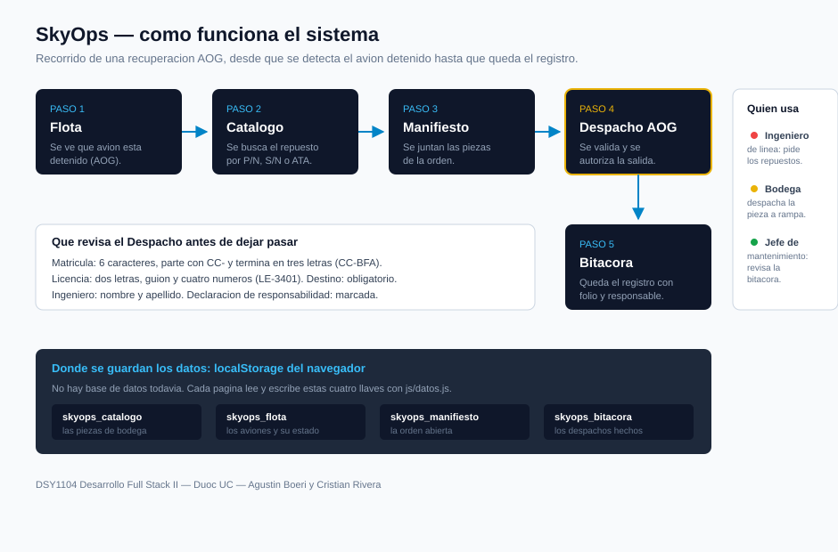

AOG Activos
0
Logística y Recuperación AOG
Plataforma para minimizar tiempos de inactividad de aeronaves en tierra (AOG).
0
0
AOG viene de Aircraft On Ground. Es cuando un avión queda detenido en tierra porque tiene una falla técnica y no puede volar hasta que llegue el repuesto correcto. Cada hora detenido le cuesta mucho dinero a la aerolínea, además de los vuelos que se atrasan.
El siguiente esquema muestra el recorrido completo que hace una solicitud dentro de SkyOps, desde que se detecta la aeronave detenida hasta que el despacho queda registrado en la bitácora:
